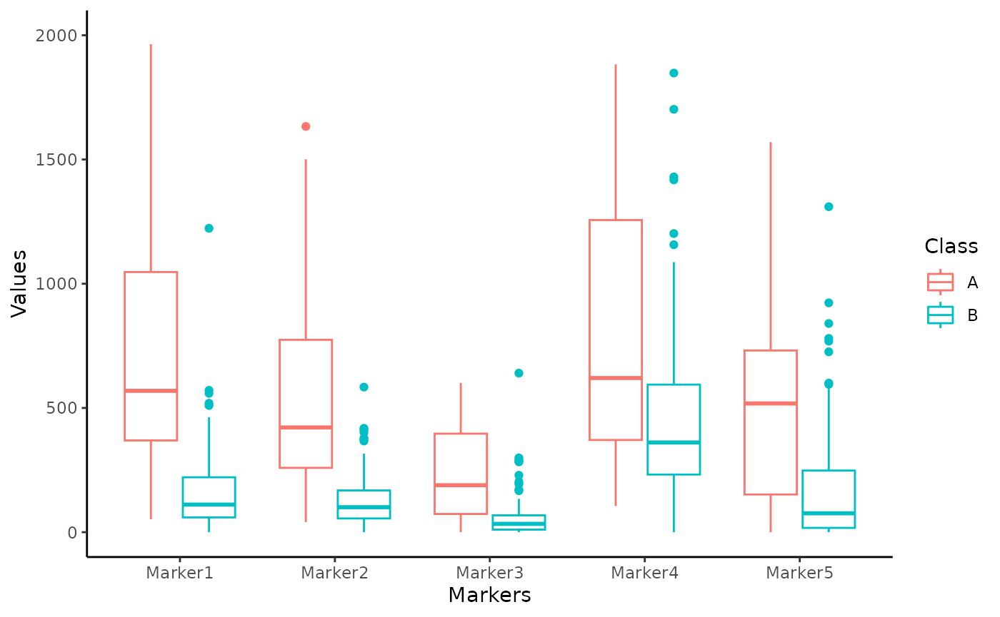
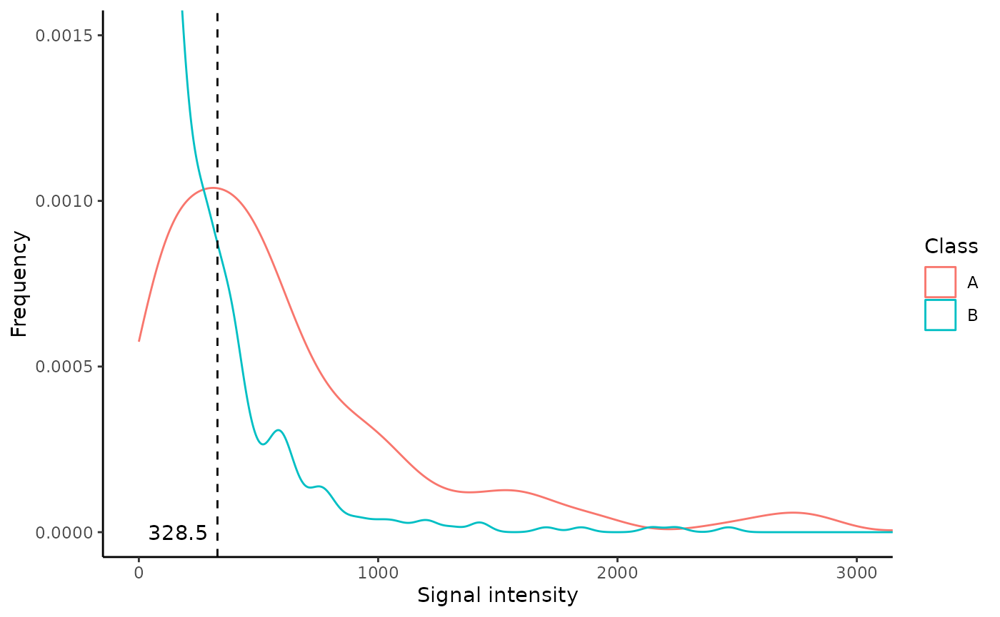

Guide to CombiROC package - Standard workflow
Selection and ranking of omics biomarkers
combinations made easy.
Ivan Ferrari, Riccardo L. Rossi
03 July 2023
Source:vignettes/combiroc_vignette_1.Rmd
combiroc_vignette_1.RmdSummary
Powerful biomarkers are important tools in diagnostic, clinical and research settings. In the area of diagnostic medicine, a biomarker is often used as a tool to identify subjects with a disease, or at high risk of developing a disease. Moreover, it can be used to foresee the more likely outcome of the disease, monitor its progression and predict the response to a given therapy. Diagnostic accuracy can be improved considerably by combining multiple markers, whose performance in identifying diseased subjects is usually assessed via receiver operating characteristic (ROC) curves. The CombiROC tool was originally designed as an easy to use R-Shiny web application to determine optimal combinations of markers from diverse complex omics data ( Mazzara et al. 2017 ); such an implementation is easy to use but has limited features and limitations arise from the machine it is deployed on. The CombiROC package is the natural evolution of the CombiROC tool and it allows the researcher/analyst to freely use the method and further build on it.
The complete workflow
The aim of this document is to show the whole CombiROC workflow for biomarkers analysis to get you up and running as quickly as possible with this package. To do so we’re going to use the proteomic dataset from Zingaretti et al. 2012 containing multi-marker signatures for Autoimmune Hepatitis (AIH) for samples clinically diagnosed as “abnormal” (class A) or “normal” (class B). The scope of the workflow is to first find the markers combinations, then to assess their performance in classifying samples of the dataset.
Note: if you use CombiROC in your research, please cite:
Mazzara S., Rossi R.L., Grifantini R., Donizetti S., Abrignani L., Bombaci M. (2017) CombiROC: an interactive web tool for selecting accurate marker combinations of omics data. Scientific Reports, 7:45477. 10.1038/srep45477
Required data format
The dataset to be analysed should be in text format, which can be separated by commas, tabs or semicolons. Format of the columns should be the following:
- The 1st column must contain unique patient/sample IDs.
- The 2nd column must contain the class to which each sample belongs.
- The classes must be exactly TWO and they must be labelled with character format with “A” (usually the cases) and “B” (usually the controls).
- From the 3rd column on, the dataset must contain numerical values that represent the signal corresponding to the markers abundance in each sample (marker-related columns).
- The header for marker-related columns can be called ‘Marker1, Marker2, Marker3, …’ or can be called directly with the gene/protein name. Please note that “-” (dash) is not allowed in the column names
Data loading
The load_data() function uses a customized
read.table() function that checks the conformity of the
dataset format. If all the checks are passed, marker-related columns are
reordered alphabetically, depending on marker names (this is necessary
for a proper computation of combinations), and it imposes “Class” as the
name of the second column. The loaded dataset is here assigned to the
“data” object. Please note that load_data() takes
the semicolumn (“;”) as default separator: if the dataset to be loaded
has a different separator, i.e. a comma (“,”), is necessary to specify
it in the argument sep. The code below shows how to load a
data set contained in the “data” folder (remember to adjust the path
according to your current working directory).
First of all, load the package
Then load the data. To do so you can use the function
load_data() if you have a correctly formatted dataset
ready:
data <- load_data("./data/demo_data.csv")Now, we are going to use an AIH demo data set, that has been included
in CombiROC package and can be directly called as
demo_data.
data <- demo_data
head(data)## Patient.ID Class Marker1 Marker2 Marker3 Marker4 Marker5
## 1 AIH1 A 438 187 197 298 139
## 2 AIH2 A 345 293 134 523 335
## 3 AIH3 A 903 392 300 1253 0
## 4 AIH4 A 552 267 296 666 22
## 5 AIH5 A 1451 760 498 884 684
## 6 AIH6 A 497 260 175 640 572NB: combiroc is able to deal with missing values both by removing the samples with NA values or imputing the values given the median signal of the class (see ?roc_reports() deal_NA parameter). combiroc is not meant to work with negative values. We recommend to preprocess the data in order to have for all the markers, and for all the sample, a numeric signal values higher or equal to 0 BEFORE using combiroc.
Exploring the data
It is usually a good thing to visually explore your data with at
least a few plots.
Box plots are a nice option to observe the distribution of measurements
in each sample. The user can plot the data as she/he wishes using the
preferred function: since data for CombiROC are required to be in
wide (untidy) format, they cannot be plotted directly
with the widely used ggplot() function. Either the user is
free to make the data longer (tidy) for the sole purpose of
plotting, or the package’s combiroc_long() function can be
used for this purpose; this function wraps the
tidyr::pivot_longer()function, and it’s used to reshape the
data in long format.
Data in long format are required for the plotting functions of the package and for any other Tidyverse-oriented applications.
The data object in the original wide format can be thus transformed into the reshaped long format data_long object, and further used.
data_long <- combiroc_long(data)
data_long## # A tibble: 850 × 4
## Patient.ID Class Markers Values
## <chr> <chr> <chr> <int>
## 1 AIH1 A Marker1 438
## 2 AIH1 A Marker2 187
## 3 AIH1 A Marker3 197
## 4 AIH1 A Marker4 298
## 5 AIH1 A Marker5 139
## 6 AIH2 A Marker1 345
## 7 AIH2 A Marker2 293
## 8 AIH2 A Marker3 134
## 9 AIH2 A Marker4 523
## 10 AIH2 A Marker5 335
## # ℹ 840 more rowsChecking the individual markers
Individual markers can also be explored retrieving a summary
statistics and all individual scatter plots. To do so, the function
single_markers_statistics() can be used ingesting the
dataframe data_long in long format returned by
combiroc_long().
sms <- single_markers_statistics(data_long)The single_markers_statistics() function returns a list
on length 2, whose first element (sms[[1]]) is a table with
statistics for all markers in each class. The computed statistics
are:
- mean value
- minimum and maximum values
- stadard deviation
- coefficient of variation
- first quartile limit, median, third quartile limit
s_table <- sms[[1]]
s_table## # A tibble: 10 × 11
## # Groups: Markers [5]
## Markers Class Mean Min Max Sd CV First_Quart. Median
## <chr> <chr> <dbl> <int> <int> <dbl> <dbl> <dbl> <dbl>
## 1 Marker1 A 1159. 52 8584 1672. 1.44 369. 569
## 2 Marker1 B 161. 0 1223 162. 1.01 59.5 111
## 3 Marker2 A 692. 41 3704 783. 1.13 259 422.
## 4 Marker2 B 141. 0 2142 205. 1.45 55.2 100.
## 5 Marker3 A 767. 0 13178 2436. 3.18 73.2 189
## 6 Marker3 B 56.2 0 640 80.6 1.43 10.2 33.5
## 7 Marker4 A 879. 105 3390 713. 0.811 371 620.
## 8 Marker4 B 467. 0 2464 406. 0.869 232 361
## 9 Marker5 A 571. 0 2757 582. 1.02 152. 518
## 10 Marker5 B 205. 0 4114 413. 2.02 17.2 76
## # ℹ 2 more variables: Third_Quart. <dbl>, Skewness <dbl>While the second element is another list, containing dot plots, one
for each marker. The individual plots can be called from the second
element (sms[[2]]) of the list with the $
operator. Here we display the plot for Marker 1:
plot_m1 <- sms[[2]]$Marker1
plot_m1In the section “Code snippets” at the end of this vignette we suggest code snippets that can be used to customize the plots for individual markers across all samples, as well as to modify the summary statistics.
Markers distribution overview
Since the target of the analysis is the identification of marker combinations capable to correctly classify samples, the user should first choose a signal threshold to define the positivity for a given marker/combination. This threshold should:
- Positively select most samples belonging to the case class (labelled with “A” in the “Class” column of the dataset), which values must be above the signal threshold.
- Negatively select most control samples (labelled “B”), which values must be below the signal threshold.
Usually this threshold is suggested by the guidelines of the kit used
for the analysis (e.g. mean of buffer signal + n standard deviations).
However, it is a good practice to always check the distribution of
signal intensity of the dataset. To help the user with this operation,
the markers_distribution() function have been implemented
generating a set of discoverable objects.
This function takes as input the data in long format (
data_long ), and returns a named list (here assigned to
the distr object). Please note that the only required
argument of markers_distributions() function is
case_class, while other arguments have defaults: specific
warnings are triggered with this command remembering the users the
default threshold parameters that are in place during the
computation.
distr <- markers_distribution(data_long, case_class = 'A',
y_lim = 0.0015, x_lim = 3000,
signalthr_prediction = TRUE,
min_SE = 40, min_SP = 80,
boxplot_lim = 2000)## Warning in markers_distribution(data_long, case_class = "A", y_lim = 0.0015, :
## The suggested signal threshold in $Plot_density is the threshold with the
## highest Youden index of the signal thresholds at which SE>=min_SE and
## SP>=min_SP. This is ONLY a suggestion. Please check if signal threshold is
## suggested by your analysis kit guidelines instead, and remember to check
## $Plot_density to better judge our suggested threshold by inspecting the 2
## distributions.The distr object
The distr object contains the following elements:
- a Boxplot distribution of all single markers
- a ROC curve for all markers
- the above curve’s coordinates
- a density plot for case and control classes
- a summary with a few statistics.
Once the markers_distributions() function is run, all
the above elements can be plotted or displayed individually. Let’s see
each one of them
Boxplot
The Boxplot shows the distribution of each marker values for both classes:
distr$Boxplot
The ROC curve for all markers and its coordinates
The ROC curve shows how many real positive samples would be found positive (sensitivity, or SE) and how many real negative samples would be found negative (specificity, or SP) in function of signal threshold. Please note that the False Positive Rate (i.e. 1 - specificity) is plotted on the x-axis. These SE and SP are refereed to the signal intensity threshold considering all the markers together; they are not the SE and SP of a single marker/combination computed by the ’combi()` function further discussed in the Combinatorial analyisis, sensitivity and specificity paragraph.
distr$ROCThe Coord is a dataframe that contains the
coordinates of the above described “ROC” (threshold, SP and SE) that
have at least a minimun SE (min_SE) and a minimum SP (min_SP): this two
threshold are set by default at min_SE = 0 and
min_SP = 0, but they can be set manually by specifying
different values as shown in the example. The Youden index is also
computed: this is the Youden’s J statistic capturing the performance of
a dichotomous diagnostic test, with higher values for better performance
( \(J = SE + SP -1\)).
head(distr$Coord, n=10)## threshold specificity sensitivity Youden
## 240 319.5 80 65 0.4500000
## 241 320.5 80 65 0.4515385
## 242 322.0 80 65 0.4530769
## 243 325.0 80 65 0.4546154
## 244 327.5 81 65 0.4561538
## 245 328.5 81 65 0.4576923
## 246 329.5 81 64 0.4526923
## 247 331.0 81 64 0.4426923
## 248 332.5 81 64 0.4488462
## 249 334.0 82 64 0.4503846The density plot and suggested signal threshold
The Density_plot shows the distribution of the
signal intensity values for both the classes. In addition, the function
allows the user to set both the y_lim and x_lim values to provide a
better visualization. One important feature of the density plot is that
it calculates a possible signal intensity threshold: in
case of lack of a priori knowedge of the threshold the user can
set the argument signalthr_prediction = TRUE in the
markers_distribution() function. In this way the function
calculates a “suggested signal threshold” that corresponds to the signal
threshold value associated to the highest Youden index (in
Coord), at which SE and SP are greater or equal to
their set minimal values (min_SE and min_SP). This threshold is added to
the “Density_plot” object as a dashed black line and a number. The use
of the Youden index allows to pick a threshold with the best SE/SP
setting, but it is recommended to always inspect “Coord” and choose the
most appropriate signal threshold by considering SP, SE and Youden
index.
This suggested signal threshold can be used as
signalthr argument of the combi() function
further in the workflow.
distr$Density_plot
The density summary
Finally, the Density_summary displays a few summary statistics of the density plot.
distr$Density_summary## # A tibble: 2 × 9
## Class `# observations` Min Max Median Mean `1st Q` `3rd Q` SD
## <chr> <int> <int> <int> <dbl> <dbl> <dbl> <dbl> <dbl>
## 1 A 200 0 13178 461 814. 233. 825 1427.
## 2 B 650 0 4114 106 206. 38 266 318.Combinatorial analysis, sensitivity and specificity
combi() function works on the dataset initially loaded.
It computes the marker combinations and counts their corresponding
positive samples for each class (once thresholds are selected). A
sample, to be considered positive for a given combination, must have a
value higher than a given signal threshold (signalthr) for at least a
given number of markers composing that combination (combithr).
As mentioned before, signalthr should be set depending
on the guidelines and characteristics of the methodology used for the
analysis or by an accurate inspection of signal intensity distribution.
In case of lack of specific guidelines, one should set the value
signalthr as suggested by the
distr$Density_plot as described in the previous
section.
In this vignette signalthr is set at
450 while combithr is set at
1. We are setting this at 450 (instead of
328.5 as suggested by the
distr$Density_plot) in order to reproduce the results
reported in Mazzara
et. al 2017 (the original CombiROC paper) or in Bombaci & Rossi
2019 as well as in the tutorial of the web app with default
thresholds.
combithr, instead, should be set exclusively depending
on the needed stringency: 1 is the less stringent and
most common choice (meaning that at least one marker in a
combination needs to reach the threshold).
Once all the combinations are computed, the function calculates:
- Sensitivity (SE) and specificity (SP) of each combination for each class;
- the number of markers composing each combination (n_markerrs).
SE of is calculated dividing the number of detected positive samples for case class by the total sample of case class (% of positive “A” samples).
SP of control class (“B”) is calculated by subtracting the percentage of positive samples for control class in the total sample of control class to 100 (100 - % of positive “B” samples).
NB: with max_length is possible to set the maximum
number of markers allowed to compose a combination (in the example the
computed combinations will be composed at most by 3 markers instead of
5). This parameter can be very useful in case of a huge number of
markers (e.g. >20) in order to drastically reduce the number of
possible combinations, making the calculation computationally more
manageable by removing the longest ones (less important from the
diagnostic point of view).
The obtained tab object is a dataframe of all the combinations obtained with the chosen parameters, the obtained value of SE, SP and number of markers.
## Markers #Positives A #Positives B SE SP
## Marker1 Marker1 26 6 65.0 95.38462
## Marker2 Marker2 19 2 47.5 98.46154
## Marker3 Marker3 8 1 20.0 99.23077
## Marker4 Marker4 26 48 65.0 63.07692
## Marker5 Marker5 23 15 57.5 88.46154
## Combination 1 Marker1-Marker2 29 6 72.5 95.38462
## Combination 2 Marker1-Marker3 29 6 72.5 95.38462
## Combination 3 Marker1-Marker4 31 52 77.5 60.00000
## Combination 4 Marker1-Marker5 30 21 75.0 83.84615
## Combination 5 Marker2-Marker3 21 2 52.5 98.46154
## Combination 6 Marker2-Marker4 32 50 80.0 61.53846
## Combination 7 Marker2-Marker5 28 17 70.0 86.92308
## Combination 8 Marker3-Marker4 29 49 72.5 62.30769
## Combination 9 Marker3-Marker5 27 16 67.5 87.69231
## Combination 10 Marker4-Marker5 31 53 77.5 59.23077
## Combination 11 Marker1-Marker2-Marker3 31 6 77.5 95.38462
## Combination 12 Marker1-Marker2-Marker4 34 52 85.0 60.00000
## Combination 13 Marker1-Marker2-Marker5 33 21 82.5 83.84615
## Combination 14 Marker1-Marker3-Marker4 34 52 85.0 60.00000
## Combination 15 Marker1-Marker3-Marker5 33 21 82.5 83.84615
## n_markers
## Marker1 1
## Marker2 1
## Marker3 1
## Marker4 1
## Marker5 1
## Combination 1 2
## Combination 2 2
## Combination 3 2
## Combination 4 2
## Combination 5 2
## Combination 6 2
## Combination 7 2
## Combination 8 2
## Combination 9 2
## Combination 10 2
## Combination 11 3
## Combination 12 3
## Combination 13 3
## Combination 14 3
## Combination 15 3Selection of combinations
The markers combinations can now be ranked and selected. After
specifying the case class (“A” in this case), the function
ranked_combs() ranks the combinations by the Youden index
in order to show the combinations with the highest SE (of cases) and SP
(of controls) on the top, facilitating the user in the selection of the
best ones. Again, the Youden index (J) is calculated in this way: \[
J = SE+SP-1
\] The user can also set (not mandatory) a minimal value of SE
and/or SP that a combination must have to be selected, i.e. to be
considered as “gold” combinations.
A possibility to overview how single markers and all combinations are
distributed in the SE - SP ballpark is to plot them with the bubble
chart code suggested in the Additional Tips&Tricks section (see: Bubble plot of all combinations) starting from the
tab dataframe obtained with the combi()
function (see above).
The bigger the bubble, the more markers are in the combination: looking at the size and distribution of bubbles across SE and SP values is useful to anticipate how effective will be the combinations in the ranking. Setting no cutoffs (i.e. SE = 0 and SP = 0), all single markers and combinations (all bubbles) will be considered as “gold” combinations and ranked in the next passage.
In the the example below the minimal values of SE and SP are set,
respectively, to 40 and 80, in order to reproduce the gold combinations
selection reported in Mazzara et. al
2017. The obtained values of combinations, ranked according to
Youden index, are stored in the “ranked markers” rmks
object containing the table dataframe and the
bubble_chart plot that can be accessed individually with
the $ operator.
rmks <- ranked_combs(tab, min_SE = 40, min_SP = 80)
rmks$table## Markers #Positives A #Positives B SE SP
## Combination 11 Marker1-Marker2-Marker3 31 6 77.5 95.38462
## Combination 1 Marker1-Marker2 29 6 72.5 95.38462
## Combination 2 Marker1-Marker3 29 6 72.5 95.38462
## Combination 13 Marker1-Marker2-Marker5 33 21 82.5 83.84615
## Combination 15 Marker1-Marker3-Marker5 33 21 82.5 83.84615
## Combination 18 Marker2-Marker3-Marker5 30 17 75.0 86.92308
## Marker1 Marker1 26 6 65.0 95.38462
## Combination 4 Marker1-Marker5 30 21 75.0 83.84615
## Combination 7 Marker2-Marker5 28 17 70.0 86.92308
## Combination 9 Marker3-Marker5 27 16 67.5 87.69231
## Combination 5 Marker2-Marker3 21 2 52.5 98.46154
## Marker2 Marker2 19 2 47.5 98.46154
## Marker5 Marker5 23 15 57.5 88.46154
## n_markers Youden
## Combination 11 3 0.7288462
## Combination 1 2 0.6788462
## Combination 2 2 0.6788462
## Combination 13 3 0.6634615
## Combination 15 3 0.6634615
## Combination 18 3 0.6192308
## Marker1 1 0.6038462
## Combination 4 2 0.5884615
## Combination 7 2 0.5692308
## Combination 9 2 0.5519231
## Combination 5 2 0.5096154
## Marker2 1 0.4596154
## Marker5 1 0.4596154as mentioned, the rmks object also has a slot for the
bubble_chart plot, that can be recalled with the usual
$ operator. This plot discriminates between combinations
not passing the SE and SP cutoffs as set in ranked_combs()
(blue bubbles) and “gold” combinations passing them (yellow
bubbles).
rmks$bubble_chartROC curves
To allow an objective comparison of combinations, the function
roc_reports() applies the Generalised Linear Model
(stats::glm() with argument family= binomial)
for each gold combination. The resulting predictions are then used to
compute ROC curves (with function pROC::roc()) and their
corresponding metrics which are both returned by the function as a named
list object (in this case called reports). The function
roc_reports() requires as input:
- The data object ( data ) obtained with
load_data(); - the table with combinations and corresponding positive samples
counts ( tab ), obtained with
combi().
In addition, the user has to specify the class case, and the single
markers and/or the combinations that she/he wants to be displayed with
the specific function’s arguments.
In the example below a single marker ( Marker1 ) and
two combinations (combinations number 11 and
15 ) were choosen.
reports <-roc_reports(data, markers_table = tab,
case_class = 'A',
single_markers =c('Marker1'),
selected_combinations = c(11,15))The obtained reports object contains 3 items that
can be accessed using the $ operator:
- Plot: a ggplot object with the ROC curves of the selected combinations;
- Metrics: a dataframe with the metrics of the roc curves (AUC, opt. cutoff, etc …);
- Models: The list of models that have been computed and then used to classify the samples (the equation for each selected combination).
reports$Plot
reports$Metrics## AUC SE SP CutOff ACC TN TP FN FP NPV PPV
## Marker1 0.910 0.90 0.808 0.219 0.829 105 36 4 25 0.963 0.590
## Combination 11 0.942 0.95 0.869 0.216 0.888 113 38 2 17 0.983 0.691
## Combination 15 0.935 0.90 0.854 0.248 0.865 111 36 4 19 0.965 0.655
reports$Models## $Marker1
##
## Call: glm(formula = fla, family = "binomial", data = data)
##
## Coefficients:
## (Intercept) log(Marker1 + 1)
## -13.775 2.246
##
## Degrees of Freedom: 169 Total (i.e. Null); 168 Residual
## Null Deviance: 185.5
## Residual Deviance: 101.7 AIC: 105.7
##
## $`Combination 11`
##
## Call: glm(formula = fla, family = "binomial", data = data)
##
## Coefficients:
## (Intercept) log(Marker1 + 1) log(Marker2 + 1) log(Marker3 + 1)
## -17.0128 1.5378 0.9176 0.5706
##
## Degrees of Freedom: 169 Total (i.e. Null); 166 Residual
## Null Deviance: 185.5
## Residual Deviance: 87.49 AIC: 95.49
##
## $`Combination 15`
##
## Call: glm(formula = fla, family = "binomial", data = data)
##
## Coefficients:
## (Intercept) log(Marker1 + 1) log(Marker3 + 1) log(Marker5 + 1)
## -16.0554 1.9595 0.6032 0.2805
##
## Degrees of Freedom: 169 Total (i.e. Null); 166 Residual
## Null Deviance: 185.5
## Residual Deviance: 87.95 AIC: 95.95Under the hood
For a bit deeper discussion on how to interpret the results, this
section will be focused on a single specific combination in the dataset
seen so far: “Combination 11”, combining Marker1, Marker2 and Marker3.
This combination has an optimal cutoff equal to 0.216
(see the CutOff column in
reports$Metrics).
The following is the regression equation being used by the Generalized
Linear Model (glm) function to compute the predictions:
\[ f(x)=β_0+β_1x_1+β_2x_2+ β_3x_3 +...+β_nx_n \]
Where \(β_n\) are the coefficients
(being \(β_0\) the intercept)
determined by the model and \(x_n\) the
variables.
While, the predicted probabilities have been calculated with the sigmoid
function:
\[ p(x) = \frac{\mathrm{1} }{\mathrm{1} + e^{-f(x)} } \]
In accordance with the above, the predictions for “Combination 11”
have been computed using the coefficients displayed as in
reports$Models (see previous paragraph), and this
combination’s prediction equation will be:
\[ f(x)= -17.0128 + 1.5378 *log(Marker1 + 1) + 0.9176 *log(Marker2 + 1) + 0.5706* log(Marker3 + 1) \]
As for the predict method for a Generalized Linear Model, predictions
are produced on the scale of the additive predictors. Predictions (\(f(x)\) values) of Combination 11 can be
visualized using the commmand glm::predict with argument
type = "link":
## 1 2 3 4 5 6
## 0.166224681 -0.008125528 2.192603482 1.077910194 3.816098810 0.593971602Prediction probabilities (\(p(x)\)
values, i.e. predictions on the scale of the response) of Combination 11
can be instead visualized using argument
type = "response":
## 1 2 3 4 5 6
## 0.5414607 0.4979686 0.8995833 0.7460983 0.9784606 0.6442759Finally, the comparison between the prediction probability and the
optimal cutoff (here 0.216, see the CutOff column for
Classification 11 in reports$Metrics) determines the
classification of each sample by following this rule:
\[ C(x) = \begin{cases} 1 & {p}(x) > opt. cutoff \\ 0 & {p}(x) \leq opt.cutoff \end{cases} \]
Specifically, for “Combination 11”:
- Samples with \(p(x)\) higher than 0.216 are classified as “positives” (1).
- Samples with \(p(x)\) lower or equal to 0.216 are classified as “negatives” (0).
Thus, using 0.216 as cutoff, Combination 11 is able to classify the
samples in the dataset with a SE equal to 95.0%, SP equal to 86.9%, and
accuracy equal to 88.8% (see ROC curves,
reports$Metrics).
Classification of new samples
A new feature of the CombiROC package (not present in the CombiROC
tool Shiny app), offers the possibility to exploit the models obtained
with roc_reports() for each selected marker/combination
(and assigned to reports$Models) to directly classify new
samples that are not labelled, i.e. not
assigned to any case or control classes.
The unclassified data set must be similar to the data set used for the previous combinatorial analysis ( i.e. of the same nature and with the same markers, but obviously without the ‘Class’ column).
To load datasets with unclassified samples labelled_data
in load_data() function must be set to FALSE. In
this way the function loads the same kind of files and it performs the
same format checks shown above, with the exception of the Class
column which is not present in an unclassified datasets and thus not
checked.
For purely demonstrative purposes, in the following example a
“synthetic” unclassified data set
(‘data/unclassified_proteomic_data.csv’) was used: it was obtained by
randomly picking 20 samples from the already classified data set (the
data). The loaded unclassified sample is here assigned
to the unc_data object.
Please note that this unclassified data set lacks the “Class” column but
has a Patient.ID column which actually allows the identification of the
class but sample names here are not used in the workflow and
have labeling purposes to check the prediction outcomes (a “no”
prefix identifies healthy/normal subjects while the absence of the
prefix identifies affected/abnormal subjects).
unc_data <- load_data(data = './data/demo_unclassified_data.csv', sep = ',', labelled_data = F)This very same dataset has been included in CombiROC package as an
unclassified demo dataset, which can be directly called typing
demo_unclassified_data.
head(demo_unclassified_data)## Patient.ID Marker1 Marker2 Marker3 Marker4 Marker5
## 1 AIH33 1964 875 404 1883 1021
## 2 no AIH126 381 303 4 266 376
## 3 AIH12 261 153 528 449 237
## 4 no AIH112 144 155 25 600 0
## 5 no AIH41 0 193 50 382 135
## 6 no AIH38 46 51 24 342 74The prediction of the class can be achieved with
combi_score(): by setting classify=TRUE, this
function applies the models previously calculated on a classified data
set working as training dataset, to the unclassified dataset and
classifies the samples accordingly to the prediction probability and
optimal cutoff as shown in the Under the hood
section.
This combi_score() function takes as inputs:
- the unclassified data set containing the new samples to be
classified (
unc_data); - the list of models
reports$Modelsthat have been previously computed byroc_reports()(reports$Models); - the list of metrics that have been previously computed by
roc_reports()(reports$Metrics).
The user can set the labels of the predicted class (setting
Positive_class and Negative_class), otherwise
they will be 1 for positive samples and
0 for the negative samples by default (see the rule
shown in the end of the Results explanation section).
Here we are setting Positive_class = "affected" and
Negative_class = "healthy"
The function returns a data.frame (cl_data in the
example below), whose columns contain the predicted class for each
sample according to the models used (originally in
reports$Models); here we are still using
Marker1, Combination 11 and
Combination 15.
unc_data <- demo_unclassified_data
cl_data <- combi_score(unc_data,
Models = reports$Models,
Metrics = reports$Metrics,
Positive_class = "abnormal",
Negative_class = "normal",
classify = TRUE)As can be observed comparing the outcome in the dataframe with the tag on samples’ names, the single marker Marker1 is not 100% efficient in correctly predicting the class (see mismatch in second row, where the normal sample “no AIH126” is classified as abnormal by Marker1); instead, both Combination 11 and 15 correctly assign it to the right class.
cl_data## ID Marker1 Combination 11 Combination 15
## 1 AIH33 abnormal abnormal abnormal
## 2 no AIH126 abnormal normal normal
## 3 AIH12 abnormal abnormal abnormal
## 4 no AIH112 normal normal normal
## 5 no AIH41 normal normal normal
## 6 no AIH38 normal normal normal
## 7 AIH4 abnormal abnormal abnormal
## 8 no AIH32 normal normal normal
## 9 AIH20 abnormal abnormal abnormal
## 10 no AIH13 normal normal normal
## 11 no AIH11 normal normal normal
## 12 no AIH114 normal normal normal
## 13 no AIH121 normal normal normal
## 14 AIH17 abnormal abnormal abnormal
## 15 AIH14 abnormal abnormal abnormal
## 16 no AIH106 normal normal normal
## 17 no AIH67 normal normal normal
## 18 AIH9 abnormal abnormal abnormal
## 19 no AIH74 normal normal normal
## 20 AIH16 abnormal abnormal abnormalThus, each column of the prediction dataframe contains the prediction outcome of a given model and, along with the samples names (in the index column), can be accessed with the $ operator as usual:
cl_data$index## NULL
cl_data$`Combination 11`## [1] "abnormal" "normal" "abnormal" "normal" "normal" "normal"
## [7] "abnormal" "normal" "abnormal" "normal" "normal" "normal"
## [13] "normal" "abnormal" "abnormal" "normal" "normal" "abnormal"
## [19] "normal" "abnormal"In addition, by setting classify=FALSE,
combi_score() can be exploited to easily retrieve the
predicted probabilities of each combination (p(x) a.k.a ‘combi score’)
in unclassified datasets.
unc_data <- demo_unclassified_data
cs_data <- combi_score(unc_data,
Models = reports$Models,
Metrics = reports$Metrics,
Positive_class = "abnormal",
Negative_class = "normal",
classify = FALSE)
cs_data## ID Marker1 Combination 11 Combination 15
## 1 AIH33 9.629030e-01 9.864991e-01 9.875017e-01
## 2 no AIH126 3.960193e-01 1.537155e-01 1.455281e-01
## 3 AIH12 2.194324e-01 4.378589e-01 5.432861e-01
## 4 no AIH112 6.928584e-02 5.381403e-02 1.289242e-02
## 5 no AIH41 1.041071e-06 4.840652e-05 4.525821e-06
## 6 no AIH38 5.893585e-03 3.576392e-03 4.687486e-03
## 7 AIH4 6.007967e-01 7.460983e-01 6.533166e-01
## 8 no AIH32 2.799238e-02 9.912527e-03 1.635574e-02
## 9 AIH20 4.661915e-01 5.588462e-01 6.067799e-01
## 10 no AIH13 1.041071e-06 4.087306e-08 2.534146e-07
## 11 no AIH11 1.041071e-06 3.153259e-06 3.309952e-07
## 12 no AIH114 1.664621e-01 8.160105e-02 9.545823e-02
## 13 no AIH121 2.799238e-02 9.247089e-02 3.612256e-02
## 14 AIH17 9.985976e-01 9.999299e-01 9.999348e-01
## 15 AIH14 5.455001e-01 6.805223e-01 7.390291e-01
## 16 no AIH106 4.001370e-02 1.099469e-02 1.870649e-02
## 17 no AIH67 1.616676e-02 6.082032e-04 1.604146e-03
## 18 AIH9 5.869070e-01 8.034081e-01 8.027712e-01
## 19 no AIH74 1.041071e-06 1.425832e-06 1.064701e-07
## 20 AIH16 9.973708e-01 9.999000e-01 9.998317e-01Ancillary functions
Retrieving composition of combinations
show_markers() returns a data frame containing the
composition of each combination of interest. It requires as input one or
more combinations (only their numbers), and the table with combinations
and corresponding positive samples counts (“tab”, obtained with
combi()).
show_markers(selected_combinations =c(11,15), markers_table = tab)## Combination Composing_markers
## 1 Combination 11 Marker1-Marker2-Marker3
## 2 Combination 15 Marker1-Marker3-Marker5Retrieving combinations containing markers of interest
combs_with() returns the combinations containing all the
markers of interest. It requires as input one or more single marker, and
the table with combinations and corresponding positive samples counts
(“tab”, obtained with combi()). The list with the
combinations containing all the markers is assigned to
“combs_list” object.
combs_list <- combs_with(markers=c('Marker1', 'Marker3'), markers_table = tab)## The combinations in which you can find ALL the selected markers have been computed
combs_list## [1] 2 11 14 15Back to the top of this doc
Go to Signature refining tutorial
Session Info for this vignette:
## R version 4.3.1 (2023-06-16)
## Platform: x86_64-pc-linux-gnu (64-bit)
## Running under: Ubuntu 22.04.2 LTS
##
## Matrix products: default
## BLAS: /usr/lib/x86_64-linux-gnu/openblas-pthread/libblas.so.3
## LAPACK: /usr/lib/x86_64-linux-gnu/openblas-pthread/libopenblasp-r0.3.20.so; LAPACK version 3.10.0
##
## locale:
## [1] LC_CTYPE=C.UTF-8 LC_NUMERIC=C LC_TIME=C.UTF-8
## [4] LC_COLLATE=C.UTF-8 LC_MONETARY=C.UTF-8 LC_MESSAGES=C.UTF-8
## [7] LC_PAPER=C.UTF-8 LC_NAME=C LC_ADDRESS=C
## [10] LC_TELEPHONE=C LC_MEASUREMENT=C.UTF-8 LC_IDENTIFICATION=C
##
## time zone: UTC
## tzcode source: system (glibc)
##
## attached base packages:
## [1] stats graphics grDevices utils datasets methods base
##
## other attached packages:
## [1] combiroc_0.3.3
##
## loaded via a namespace (and not attached):
## [1] sass_0.4.6 utf8_1.2.3 generics_0.1.3 tidyr_1.3.0
## [5] gtools_3.9.4 stringi_1.7.12 digest_0.6.32 magrittr_2.0.3
## [9] pROC_1.18.2 evaluate_0.21 grid_4.3.1 fastmap_1.1.1
## [13] rprojroot_2.0.3 plyr_1.8.8 jsonlite_1.8.7 purrr_1.0.1
## [17] fansi_1.0.4 scales_1.2.1 textshaping_0.3.6 jquerylib_0.1.4
## [21] cli_3.6.1 rlang_1.1.1 munsell_0.5.0 withr_2.5.0
## [25] cachem_1.0.8 yaml_2.3.7 tools_4.3.1 memoise_2.0.1
## [29] dplyr_1.1.2 colorspace_2.1-0 ggplot2_3.4.2 vctrs_0.6.3
## [33] R6_2.5.1 lifecycle_1.0.3 stringr_1.5.0 fs_1.6.2
## [37] ragg_1.2.5 pkgconfig_2.0.3 desc_1.4.2 pkgdown_2.0.7
## [41] pillar_1.9.0 bslib_0.5.0 gtable_0.3.3 glue_1.6.2
## [45] moments_0.14.1 Rcpp_1.0.10 systemfonts_1.0.4 highr_0.10
## [49] xfun_0.39 tibble_3.2.1 tidyselect_1.2.0 knitr_1.43
## [53] farver_2.1.1 htmltools_0.5.5 labeling_0.4.2 rmarkdown_2.22
## [57] compiler_4.3.1